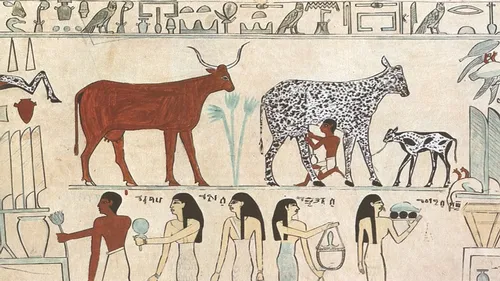
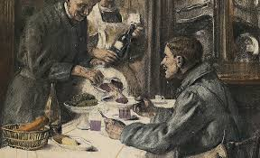
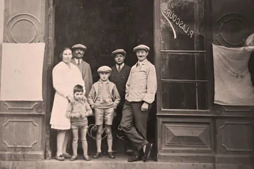

Depuis l'ère primitive, l'humain n'a cesser de consommer de la viande.
Cependant se procurer de la viande était une tâche hautement dangereuse et exténuante!
C'est pourquoi en l'an de grâçe 23 691 BC, notre ancêtre Bamboula Delakavayrne a fondé la société 2laviande.
|
|
 |
|

|
2laviande a rencontrer un large succès auprès de tout le monde (sauf les végétariens). Pourquoi?
car le but de cette société était de chasser et d'éléver les animaux à la place des autres dans le but de non seulement augmenter leurs espérance de vie mais en plus de leurs laisser assez de temps libre et d'énergie pour se poser et se développer.
Cela marqua le début de la civilisation humaines.
|
Au cours du temps 2laviande accompagna les Hommes dans le meilleur comme dans le pire.
Bien que la qualité des viandes restait irréprochable, la société devait s'adapter à son temps et aux caprices de la nature commme de la culture.
|

|
|

|
La plus grande force de notre société est son savoir-faire transmis de génération en génération depuis l'an de grâçe 23 691 BC.
Nous réinventons sans cesse de nouvelles recettes tels que le kouign-amann au lard ou encore le porc hallal.
Nous organisons également des events à durée limité: -en 1358: édition spéciale rats,
-en 1990: édition spéciale vaches,
-en 2019: édition spéciale pangolins.
Malheureusement ces events n'ont pas rencontrés le succès attendus.
|
Nous sommes fières d'être les nourriciers du peuple. Nous sommes fières d'être les bourreaux de l'humain sur les animaux.
Malgrès des remises en question de plus en plus fortes sur l'étique, la consommation de viande n'a jamais été aussi grande.
La faim ne justifirait elle pas les moyens?
|

|